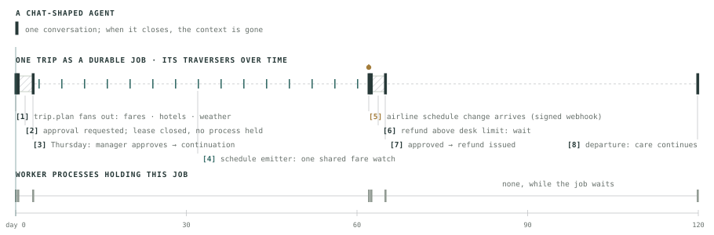
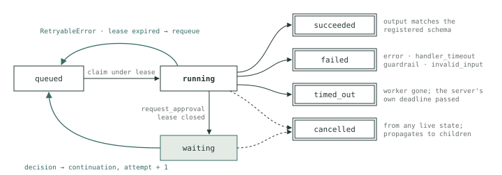
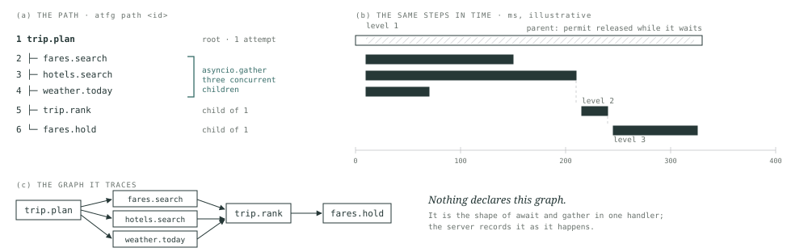
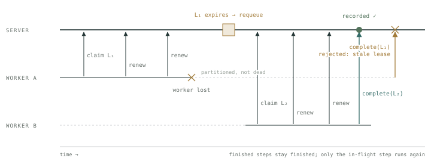
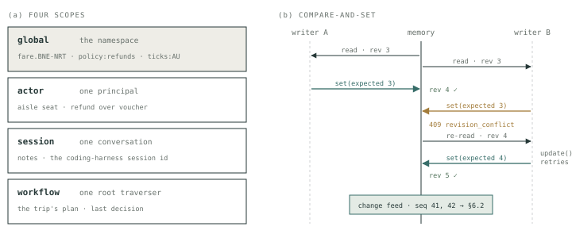
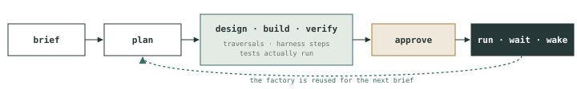
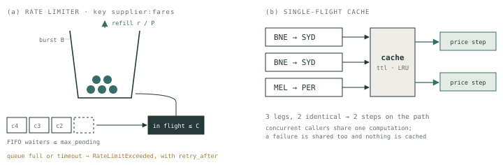

Abstract
We argue that agent frameworks have invested in the model, with larger models, longer contexts and better planners, while the work agents are given increasingly lives outside any single model call. That work needs durable identities, stored waits and event-driven admission that wake exactly the right capability when the world changes. An agent that sells travel makes promises that outlive the conversation. A booking waits days for a manager, is watched for weeks for a price drop, and is disrupted months later by a schedule change it must notice and repair. Today's agents are built for the session: when the process ends, so does the job. We study an execution model in which the unit of reliability is the job, not the process. An agent's work is a recorded walk through a graph of capabilities, owned by one server. Workers hold work only under leases, so a lost worker loses nothing that was finished. Pauses are server state, so a job can wait for a person with no process alive. Events from clocks, suppliers and shared memory admit exactly the work that needs them, a mechanism we call emitter compute. We formalise the model, state the guarantees each mechanism provides with proof sketches, and prove a limit: durable records alone cannot give exactly-once external effects. We describe ATFGraph, a runtime built on this model for travel, consider the strongest alternative views, give an interruption-centred evaluation protocol, and report seeded simulations of the model. We report no benchmark of the runtime.
Research manuscript · revised 28 November 2026. Definitions, propositions and illustrative examples are labelled. Behaviour described as tested is pinned by the system's integration tests. The experiments in Section 14 simulate the model; no benchmark of the runtime is claimed. Implementation detail is deliberately withheld, and figures are schematic unless their caption says otherwise.
1. Introduction
Suppose a traveller asks for Brisbane to Tokyo in April, under $1,200, with a hotel near Shinjuku. Finding the trip takes seconds. Keeping the promise takes four months.
The fare needs a manager's approval because it is a work trip, and the manager answers on Thursday. Once ticketed, the fare is worth watching: if it drops, some fares can be rebooked for the difference. Six weeks out, the airline moves the flight by nine hours and the hotel check-in no longer lines up. The refund for the unused night is above the desk's automatic limit, so a person has to approve it. None of these moments is predictable, and almost all of the elapsed time is spent waiting for one of them (Figure 1).

Holding a process open for four months is not an answer, and neither is a scheduled job that re-runs the whole agent and hopes it remembers. A useful way to see why is the duty cycle of the job. Let a job run for elapsed time , and let its steps run for active durations :
When is close to zero, anything that costs money or memory per unit of elapsed time is spent almost entirely on waiting. We therefore treat the wait as data and the compute as short, leased bursts. Every step the agent takes is written down by a server the agent does not control; waiting is a state the server stores, not something a program does; and when something changes in the world, the server starts work for exactly the capabilities that asked to hear about it.
Our position. Progress in agents has mostly meant a better brain: stronger models, longer contexts, more elaborate planning inside one call. That brain is necessary, but it is the wrong place to keep a promise. A model cannot wait four months, cannot notice a schedule change it was never told about, and cannot prove what it did after the process that ran it has gone. Those are jobs for durable execution: something that persists while the model is idle, carries events from the world to exactly the capability that must respond, and records every action. We argue that agent frameworks should treat this layer as first-class infrastructure, and we support the argument with a model, guarantees and a working system.
Contributions.
- A formal model of durable agent work that separates three identities, the run, the attempt and the external effect, and a closed state machine over which every guarantee is stated (Sections 2 and 3).
- Mechanisms for surviving loss and time, leases and replay-once continuation, with the conditions under which each is sound (Sections 4 and 5), and an impossibility result showing what they cannot provide (Section 6).
- Emitter compute: deduplicated, per-binding admission of work from clocks, suppliers and shared memory, with an analysis showing that supplier load can be made independent of the number of travellers (Section 7).
- Grounded memory, bounded model and coding-agent delegation, and supplier-side admission control, all expressed as recorded steps (Sections 8 to 11), together with an interruption-centred evaluation protocol (Section 13).
2. Problem setting
Travel is not the only domain in which agent work outlives a session, but it combines the hard cases at once. We name six properties, because each later maps to a mechanism.
- Long duration. A trip runs from enquiry to return, so a single job lasts days to months.
- Many parties. One trip involves an airline, a hotel, a payment provider and often a person who must approve. Each answers on its own clock.
- Volatile state. Fares and availability change by the minute. A price seen during planning is a claim, not a fact, until it is checked again at the point of purchase.
- Irreversible actions. Holds, tickets and refunds move real money. Doing one twice is worse than not doing it.
- Metered suppliers. Suppliers ration searches against bookings. An agent that polls freely is throttled or cut off.
- Unprompted events. Schedule changes, cancellations and payment confirmations arrive without being asked for.
Three identities. A run identifies the logical job. An attempt identifies one execution of a handler. An effect identity identifies a particular request to change an external system. Preserving the run identity across a restart does not automatically preserve the effect identity, and preserving either does not establish that a provider deduplicates it. Much of this paper is about keeping these three apart.
What a trace explains. An execution graph records routed or explicitly instrumented work. It can explain which worker was called, what prerequisite it consumed and where an approval paused progress. It is not an attribution graph of neural computation and does not reveal why a model preferred a plan. Our diagrams concern operational causality.
Scope. The runtime is one of several research boundaries in a larger system (Figure 2). Existing agent code, in any framework, runs inside a registered handler; calls that should appear as separate steps go through the runtime. "Any framework" describes the integration model, not a claim that every framework has been certified.

3. A model of durable work
Model scope. The equations in this section are definitions and proposed invariants introduced to formalise the documented behaviour. They are not proofs of the implementation or measured results.
3.1 Work, prerequisites and time
There are two related objects: the record of routed calls, and a model of work dependencies. The timing equations use a finite, acyclic dependency graph. A parent–child relationship in the record does not by itself mean the parent finishes before the child begins.
V contains work units. E contains prerequisite edges: u must complete before v can start. The precedence relation is causal, not just a display order.
Causal order is the right foundation for interpreting concurrent work [7]. For timing, we use the durations of individual work units and never add an inclusive parent timer to the child timers it already contains.
The run cannot finish sooner than its longest chain of dependent work. Queuing, contention, retries and human waiting can make it longer.
Here is the set of dependency paths in and the non-overlapping duration of work unit , all in one time unit.
If all k jobs start together, have enough resources and incur no added coordination cost, their combined stage finishes with the slowest job.

3.2 Graph, nodes and traversers
A graph server owns the graph. It routes every call, schedules work, stores memory and records what happened, and it is the only inbound endpoint: clients call it, workers connect out to it, and nothing calls a node directly (Figure 4). A node is a deployable worker that registers a label, a version and a set of capabilities; registration is immutable per version. Capabilities come in four kinds: open-ended traversals, which may call models and other capabilities; deterministic skills, which wrap an external system and never call a model; typed decisions, which report their own confidence so that uncertain answers can be counted; and live media sessions. A supplier's interface is never shown to a model directly: the model sees a skill, and every call to it is a recorded step.

A traverser is one live walk through the graph, started by a request or an event. It has an identity, a status, memory and a path: the recorded sequence of steps it took. A step records its target, its parent step, its status, its attempt number and its elapsed time. A traverser moves through a small, closed set of states. Later guarantees are statements about which transitions are allowed and who may cause them:

Inputs and outputs are typed. Input is validated at admission, so a malformed request is rejected before any worker sees it, and output is validated at completion, so a handler that returns the wrong shape does not succeed. A validation failure is marked not retryable, because trying again would not fix it.
3.3 Graphs that are traced, not declared
Workflow engines usually ask the author to declare a graph and then walk it. Here the code of each traversal decides at run time what to call, and the server records what happened. Each call from inside a handler submits a child traverser carrying the parent's step, the parent's lease and an operation key; the server records an edge, checks access policy and queues the task for whichever node registered the target. Listing 1 plans the opening trip in three levels.
- procedure PlanTrip(origin, dest, date, nights)
- (fares, hotels, weather) ← concurrently Call(fare search), Call(hotel search), Call(weather) ▷ level 1: three nodes
- choice ← Call(rank, fares, hotels, weather) ▷ level 2 needs all three
- held ← Call(hold, choice.fare) ▷ level 3 needs the ranking
- return {choice, held, review required}

Because a parent may fail and be retried, re-running its code would re-submit its children. The operation key prevents that. Let count the calls a handler has made so far:
A retried parent asks for the same and receives the existing child rather than a second one. A retried attempt of Listing 1, after the hold succeeded, therefore does not place a second hold. In travel, that is the difference between a retry and a double booking. The protection covers retried attempts; a continuation after a pause is different, and Section 5 treats it.
The same primitives give every classical workflow shape without a workflow language: sequence, fan-out and fan-in, branching, model-directed routing in which each tool call becomes a child step, retries, pauses and event-started runs. Sometimes the graph is not known until a model plans it. A planning decision returns tasks with dependencies, and the runner groups them by topological level, refusing a cycle:
Everything at one level runs concurrently, and each task receives the outputs of the tasks it depends on.
3.4 Bounded waiting
A worker holds handler permits. A parent that awaits a child on a worker with one permit would wait forever if it kept the permit. Instead, when a handler starts waiting on children it releases its permit, and it takes one again when the last wait ends. Let be the number of handlers running and the number waiting without a permit:
Sketch. Each waiting ancestor holds no permit, so a permit is free for the deepest runnable call. That call finishes, its parent wakes and takes the freed permit, and the argument repeats up the tree. Past , a parent keeps its permit and simply waits, which bounds memory rather than guaranteeing progress. ∎
The system's integration tests run nested calls with to completion. Root turns submitted to the same session run one at a time, so two messages in one conversation never race, but their children are not held back.
4. Durability: leases and attempts
A worker never owns work; it borrows it. A task is claimed under a lease that the worker keeps alive with a heartbeat that runs independently of the handler. If the worker disappears, the lease expires and the traverser returns to the queue. If the old worker was only partitioned and later reports a result, that completion carries a stale lease and is rejected. This is the classical lease construction [1], applied per step.

Errors are terminal by default. A handler that wants another attempt must say so explicitly, and the capability must declare an attempt budget. The server then schedules the next attempt on the same step, records why, and increments the attempt the handler can read:
The second half of the equation matters for Section 5: resuming after a person decides is not charged to the failure budget. In a disruption scenario from the system's tests, a model provider fails twice with a transient error and then succeeds; the result is produced on attempt 3, both retries are recorded, and the provider is called exactly three times. An error that would fail again, such as a malformed request, is deliberately left terminal.
The run identity is retained while the attempt count increases. Continuation restarts the handler; it does not restore an arbitrary instruction pointer.
Here and are the run identity and attempt number before a continuation, and and after it.
Continuation restarts the handler; it does not restore an arbitrary instruction pointer. Three independent clocks bound a step: the handler's own budget, enforced by the worker; a server deadline from the same budget, which applies if the worker itself is gone; and the caller's wait, which only stops the caller from waiting. Cancellation is cooperative and propagates from a root to every running child, and progress reports are durable, so partial work is reported rather than lost.
5. Pauses, approvals and replay-once
A pause is the central idea of the runtime and is easy to describe wrongly. When a handler requests approval, the server stores the request as pending, closes the task's lease and moves the traverser to waiting. Inside the worker, the handler stops at that line and releases its permit. Nothing is held while the reviewer thinks: no process, no thread, no open connection.
When someone decides, the server queues a continuation for the same traverser. The handler does not resume from the line where it stopped. It runs again from the top under a fresh lease, with the attempt number increased by one, and on that run the approval request with the same operation key returns the stored decision instead of pausing. Resumption is therefore replay, and the author's task is to make replay safe.
- procedure RequestRefund(ticket, amount)
- case ← ReadCheckpoint("refund case")
- if case = ∅ then ▷ first attempt only
- record ← Call(assess refund, ticket) ▷ one child step, ever
- case ← {ticket, route, fare, amount, prepared = a}
- CreateCheckpoint("refund case", case) ▷ fails if one exists
- if case.amount ≤ LIMIT then return approved by desk policy
- d ← AwaitDecision(prompt(case), key = "refund" ∥ case.ticket) ▷ prompt built only from the checkpoint
- ▷ attempt 1 stops at line 8; attempt 2 receives d here
- return {status = d.status, attempts = a, prepared = case.prepared}

Sketch. The only routed step before the pause is the assessment at line 4. If a crash falls between lines 4 and 6, the retried attempt finds no checkpoint and reaches line 4 again, but submits the same operation key, so by (i) it receives the existing child rather than creating a second one. Once line 6 has run, the checkpoint exists and can be created only once, so every later attempt, including the continuation that re-runs the handler from the top, skips line 4. The prompt at line 8 is a function of the checkpoint alone, so (ii) never refuses it. By (iii) every attempt after the decision receives the same decision, and by (iv) the continuation cannot exhaust the attempt budget. ∎
The same pattern is useful without a pause: a handler that may be retried and performs an external effect, such as placing a hold, records a marker before the call and checks it on retry. Because a pause is server state, a deployment can happen during it; the continuation runs whatever version is deployed when the decision arrives, which is why pre-pause effects belong behind a checkpoint.
5.1 A decision arrives after a restart
An agent gathers supporting information, saves it and asks a person to approve the next action. The runtime records the pending request and releases the worker. After the decision, the same run is queued under a fresh attempt, loads the saved preparation, asks for the same approval with its stable key, receives the recorded decision and branches on it (Figure 9). Approval is a recorded decision, not an automatic enforcement of every later line of application code: a correctly written handler must stop or choose a different action when the decision does not permit the proposed one. The interactive scenario below steps through this case and two failure cases.

Inspect an interrupted job
- Prepare
- Checkpoint
- Wait
- Continue
- Effect
- Receipt
The decision is stored durably and the handler re-enters with the same logical run identity. Completed preparation can be reused if its inputs remain valid.
6. The limits of replay
Durable orchestration is often described as giving exactly-once behaviour. For effects on systems the runtime does not own, it cannot do so on its own.
Sketch. Compare two executions: in one the crash precedes the effect, in the other it follows the effect but precedes the checkpoint. Both end in the same local state and different external states. A retry rule that reads only local state must act identically in both, so it either repeats the effect in the second or omits it in the first. Additional information, or a deduplication contract on the provider's side, is required. ∎

The proposition motivates a recovery protocol rather than a stronger slogan [2], [8]. Persist the intent before dispatch, retain a stable effect identity, obtain authoritative evidence from the supplier when an outcome is unknown, and use an idempotent participant interface where one is genuinely supported. If the participant cannot resolve the uncertainty, expose the unresolved case to operations instead of inventing a terminal success.
Progress assumptions. Eventual completion requires more than durable storage. A worker must eventually be available, prerequisites must become satisfiable, approvals must arrive or expire, and the external system must return a usable outcome. A runtime may preserve a waiting job indefinitely without any of these liveness conditions holding, so time spent waiting should be reported separately from active compute and queueing delay.
7. Emitter compute
Sections 4 to 6 explain how a job survives while it waits. This section explains how work starts when nobody calls. In travel most reasons to act come from outside: a clock, a supplier, a payment provider, or another agent writing something down. We call these sources emitters, and the work of turning them into exactly the right traversers emitter compute. An emitter is a persistent definition on the server, either a schedule, an authenticated inbound event source or a memory source, and it admits one traverser per delivery to the capability bound to it. Capabilities declare their bindings alongside their code, and bindings removed from code are disabled rather than silently kept.
![Figure 11. Emitter compute. Admission stages run on the server; for bindings declared in code, reshaping and validation run on the worker after admission, so a failure there fails the traverser before the handler runs. Every stage has an explicit way to refuse. A repeated delivery returns the traverser the first one created, and the faded packet shows a duplicate stopping at the deduplication stage. One memory write (blue) admits one run for every capability bound to it. Names to the right are illustrative.](assets/academic/flows/atfgraph-source-07.svg)
7.1 Exactly the right number of runs
Every delivery carries a delivery key and the server deduplicates on it. For schedules the key derives from the due time, so a restarted server never fires the same due time twice. For inbound events it derives from the provider's own event identity. For memory it includes the revision of the write. Writing for a delivery with key and body :
Suppliers retry their notifications, networks duplicate them and operators replay them by hand; the admission rule makes all three safe for a booking system. A delivery with an invalid signature admits nothing. An event type the binding did not ask for is stored as filtered, with no traverser, so it can be audited without being acted on. A payload that fails validation is set aside for inspection and counted, never silently dropped.
7.2 Memory as a nervous system
A memory source fires when a key is written or deleted. Each matching change admits one traverser to each bound capability. A failed admission never fails the memory write that caused it, and the revision in the delivery key means a replay cannot run the same change twice. One agent writes down what it learned, and every capability bound to that key is admitted once, without the writer knowing who they are.
7.3 One check, many interested agents
Suppose booked trips care about the same fare. Left alone, each trip's agent would ask the supplier on its own every hours over a horizon . Because suppliers meter searches against bookings, this is risk as well as waste. The alternative uses only the primitives above: one scheduled watch makes one search and writes the result to a shared key only when the fare has moved, and a repricing capability bound to that key is admitted once per real change and fans out over the trips that hold the fare. With real changes over the horizon:
Here counts supplier searches and counts per-trip runs.
Sketch. Searches are made only by the single scheduled watch, so their number is fixed by the schedule. Each real change produces one write and, by the deduplication rule above, one admission per binding, which visits trips. ∎

Who may read a shared key is a matter for access policy, not for the emitter. The runtime guarantees the mechanics: deduplicated deliveries, revisioned writes and per-binding admission.
8. Memory and grounded knowledge
A trip has state at several lifetimes: a fare shared by many travellers, a traveller's preferences, a conversation's notes, a single trip's plan. Each lifetime has its own memory scope, and the scope's namespace and actor are derived from authentication, so a handler cannot name its way into someone else's state (Figure 13). Every write returns a revision and may state the revision it expects:

A stale expectation is refused, and a helper wraps the read, apply and compare-and-set loop. Every successful write appends to a gap-free change feed, which is what memory emitters consume. Vectors live beside values in the same scopes, and similarity is ranked by cosine, either exactly or approximately through a navigable small-world index [6]; the runtime brings no embedding model of its own:
Travel answers are only as good as the policy they quote. The knowledge store holds documents, chunks them on the server and ranks chunks lexically [4]. For a query and a chunk :
Two consequences are stated plainly in the design. Retrieval is lexical, so a query for "luggage" does not find a chunk that only says "baggage". And every hit carries a stable citation that remains valid until the document is rewritten; ranking is deterministic, so the same question cites the same passages, and context is cut on passage boundaries, so a citation never points at truncated text. When a model writes the answer, any citation it returns that was not in the retrieved set is rejected. When meaning matters more than wording, a semantic layer stores the same chunks as vectors and fuses the two rankings by reciprocal rank [3], for a constant :
Semantic hits are re-checked against the live document revision, and vectors left behind by an older revision are dropped rather than served.
9. Models and delegated agents inside the walk
A traversal can call a model. The model provider is configured on the worker; the graph server never holds a model key. Travel decisions need structured answers, so a model call may request a validated, typed object. Endpoints disagree about how they accept a schema, so the system steps down a ladder of request shapes until one is accepted, and remembers the answer (Figure 14).

A traversal may offer capabilities to the model as tools. Each tool call the model makes is itself a recorded child step, subject to the same policy, leases and retries as any other. A tool that fails returns an error to the model rather than failing the traversal, so the model can report that a search failed instead of inventing a fare, and a capability is never offered to itself. The loop is bounded:
A typed decision declares which field of its answer is the model's confidence, so uncertain and fallen-back decisions can be counted per capability, which is the evidence needed before widening an agent's authority. Every model call records a cost entry. A price is recorded only when the provider states one; an unknown price is kept unknown, never recorded as zero. Where only token counts are returned, an operator-supplied rate table gives an estimate that is marked as estimated:
9.1 Delegating to a coding agent
Some steps need an agent that reads and edits files and runs commands for many turns: generating a supplier adapter from an interface description, or fixing a failing test. Such a coding agent runs as one bounded step of a traversal; the traversal sees the answer and the metrics, not the individual edits. Two timeouts apply, the coding agent's wall-clock deadline and the step's budget , and they must satisfy
or the server times the step out while the agent is still running. A delegated step is never retried automatically, because a retry would redo the edits, and nothing is fabricated: an agent that exits with an error or produces no answer fails the step with its own message.

Edits are where people must stay in control, and the runtime already has the parts. A supervised write is two delegated steps separated by a durable approval: a read-only run produces a typed plan kept behind a checkpoint, a person approves, and a second run applies the plan and reports the tests. By Proposition 2 the planning run happens once, however long the person takes.
9.2 From a brief to software
These parts combine into an agent factory. A brief becomes a shared plan; design, build and verification agents work on it as traversals that may delegate to coding agents; a person reviews the release through an approval; and the approved agents are deployed into the same runtime, where they run, wait and wake like any other node (Figures 16 and 17).


A particularly useful boundary is the accepted file set. A fingerprint of the reviewed files is recorded and compared with the files retrieved for deployment, and a mismatch stops deployment, so acceptance of one version cannot silently authorise another.
Deployment requires the retrieved file set to match the accepted file set’s fingerprint. This is necessary, not sufficient: deployment permission and checks still apply.
Here is the fingerprint of the file tree retrieved for deployment, and is the exact file set accepted in review. The guarantee holds only on the paths that perform the comparison, with the recorded digest and the deployment boundary intact.

This is necessary, not sufficient. Deployment still depends on the configured harness, permissions, deployment route and healthy workers, and passing fixture tests does not prove behaviour against every real business system.
10. Admission control at the supplier's edge
Travel agents sit between a model that wants to be helpful and suppliers that meter every search and refuse malformed requests. Named checks run on a handler's admitted input and on its encoded output, on the worker, because that is where the output exists. A refusal fails the step, names the rule and is never retried; nothing is redacted or rewritten silently. For outbound calls, a limiter gives bounded, first-in-first-out admission per key, combining a token bucket of rate per period and burst with a concurrency cap and a maximum queue:
A result cache is expiring, size-bounded and single-flight, so concurrent callers of the same key share one computation: if two legs of a trip are identical, the path holds one pricing step for both. Calls that fail because of a rate limit are retried with the provider's advised delay or with bounded exponential backoff, never past a deadline; every other error propagates at once.

Travel software also changes while trips are in flight. Because a definition is immutable per version and a worker claims work only for the version it registered, two versions of a capability can serve side by side. An unpinned call reaches the newest version; a pinned call freezes its input contract; and discovery results are pinned to the version at which they were found, so invoking them later cannot silently move to a newer contract.
11. Accountability
When money moves on someone's behalf, "what happened" must have one answer. The path is that answer: every step, its parent, its status, each attempt and its timing, written by the server rather than by the agent. When node identity is enabled, each step is signed, and the resulting chain can be verified offline by someone who does not trust the server's database.
| When | Step | Result |
|---|---|---|
MON 09:00 | Request received | Recorded |
MON 09:01 | Checks completed | Saved (checkpoint) |
MON 09:02 | Approval requested | Waiting |
THU 14:10 | Manager approved | Approved |
THU 14:11 | Instruction submitted | Complete |
A useful record connects a request to the capabilities it invoked, their attempts and their returned outcomes. Execution success and decision quality are different: a handler can run successfully and still return a poor recommendation, and confidence must be calibrated against labelled outcomes before it becomes a basis for permission. Usage is recorded without being asked for, and accounting never fails a handler. Each durable usage record carries a call identifier,
so re-posting the same call is deduplicated, while a retried attempt, which really did spend tokens again, records new rows. Each total states whether its cost is complete, meaning every call in it was priced. Traces propagate across nodes, so one trip appears as one trace in a team's existing tracing system.
Oversight follows from the same records. A path to autonomy has two stages: in shadow, the agent proposes its next action and nothing is carried out; in live, it acts within a scope a person approved, widened one step at a time. The runtime supplies what makes the stages checkable, namely approvals, confidence counts, paths and cost totals. The policy for widening authority belongs to the operator.
12. A disrupted trip, end to end
We return to the opening trip and follow it through every mechanism. Figure 20 places each event on the actor that causes it.

- The request starts a root traverser in the traveller's session. Root turns in one session are serialised, so a second message cannot race the first (Section 3.4).
- Three searches run concurrently on three nodes, then rank, then hold. The hold's operation key means a retried attempt cannot place a second hold (Equation (6)).
- The work-trip approval stores the case as a checkpoint and pauses. No worker or permit is held for three days (Section 5).
- The decision queues a continuation. The handler replays from the top, skips the prepared work, receives the decision and tickets (Algorithm 1).
- A shared watch searches the fare when due and writes the shared key only when it moves; a repricing capability is admitted once per real change and revisits each affected trip (Equation (12)).
- The airline's schedule change arrives as a signed event. It is verified, deduplicated against the airline's retries, reshaped into a typed change and admitted as a new disruption traverser (Equation (11)).
- The rebooking note meets a provider outage twice. It is retryable with a budget of three, so the third attempt succeeds and the path shows all three (Equation (9)).
- The refund is above the desk limit. It is prepared once, paused for a person and issued on the decision, and its answer cites the refund policy passage it relied on (Sections 5 and 8).
- Before departure, a scheduled delivery wakes the trip to remind the traveller. The path, the usage ledger and the trace together say what the agent did over four months and what it cost (Section 11).
13. Evidence and evaluation protocol
Table 2 states what the reviewed evidence supports and where it stops. The review inspected documentation and test definitions; it did not rerun release acceptance checks, measure production availability or verify every framework integration, and it reports no throughput, cost or reliability benchmark.
| Capability | Evidence reviewed | Important limit |
|---|---|---|
| Durable runs and routed paths | Design documentation and integration guidance | A path captures routed or instrumented work; it does not expose every internal action. |
| Approval continuation and checkpoints | Documented restart-test contract | Continuation restarts the handler. Side effects need replay-aware handling. |
| A brief-to-agent workflow | Build, deployment and hardening test definitions | A build is not a deployment; accepted files and deployment approval remain distinct. |
| Framework-independent operation | Integration guidance for retaining framework code in handlers | Compatibility and telemetry must be verified for each integration. |
Test the interruptions, not the happy path. A benchmark that kills a worker only between successful steps does not test the most important crash interval. Algorithm 2 states the handler discipline under test, and Table 3 lists the interruptions, the invariant each must preserve and what to measure.
- open logical run r and begin attempt a
- read checkpoint and outstanding external intents
- reuse completed preparation only if its inputs remain valid
- for each unresolved effect: reconcile using its original identity
- if human approval is required: persist the wait and return
- resume by re-entering the handler after the decision is stored
- perform newly permitted work through governed adapters
- finish with a per-obligation outcome, not only a run status
| Interruption | Required invariant | What to measure |
|---|---|---|
| Worker exits after requesting approval | Run and review request remain addressable | Lost waits; duplicate review requests |
| Approval arrives twice | One logical decision is consumed consistently | Duplicate continuation effects |
| Supplier succeeds before checkpoint | Original effect identity is preserved | Unknown outcomes and duplicate effects |
| Approved artefact changes | Deployment rejects the mismatched digest | Accepted-file comparison coverage |
| Dependency retries under contention | Causal prerequisites are preserved | Queue time, active time, retries and critical path |
A meaningful study specifies the store, worker count, failure schedule, timeout policy and participant duplicate semantics, and reports raw event traces and unresolved outcomes alongside aggregate completion rates. For the agent factory, it changes one file after review and verifies that deployment stops. Unsupported paths and unknown outcomes are reported, not excluded.
14. Experiments on the model
We ran three small, seeded simulations of the formal model (Figure 21). They test the logic of the model, not the production runtime; the interruption study of Section 13 is still required.
E1 · The crash window. Ten thousand simulated bookings with a 5% crash rate and crash times uniform over the handler. Retrying from local state produced 31 duplicate bookings, every one from a crash inside the window between the supplier effect and the checkpoint, as Proposition 3 predicts. Reusing the same effect identity with a supplier that deduplicates, or reconciling before retrying (416 lookups), produced none. Where the supplier offers no lookup, the same 31 cases become unresolved outcomes reported to operations instead of duplicates.
E2 · Replay-once ablation. Algorithm 1 with a crash after each step, followed by a restart and a continuation. With every rule in place, the assessment ran once and the prompt never changed. Without the operation key, a crash between lines 4 and 6 repeated the assessment; without the checkpoint, the continuation repeated it and changed the prompt; without both, it ran three times. Each hypothesis of Proposition 2 is therefore needed.
E3 · Shared watch at scale. A 120-day horizon with checks every six hours (480 checks) and 27 simulated fare changes. Polling per trip makes 4,800, 48,000 and 480,000 supplier searches for 10, 100 and 1,000 trips; the shared watch makes 480 in every case, 1,000× fewer at a thousand trips, and per-trip runs fall from 480,000 to 27,000, as Equation (12) predicts.

15. Alternative views
"A bigger context is enough." If a model could hold months of history, the job would live in its context. But context is held only while a process runs, and the hard moments of a trip arrive when nothing is running. A larger window also cannot make a supplier's notification reach an agent that is not listening. Longer memory helps the brain recall; it does not wake it.
"Workflow engines already solve this." Durable workflow systems do solve much of it, and we borrow their ideas openly. The difference is where the graph comes from. Agent work is decided at run time by a model, so its graph must be traced rather than declared (Section 3.3), and its waits, decisions and events must be first-class parts of the agent model rather than bolted around it.
"Re-run the agent on a schedule." Periodic re-execution is simple, but it repeats completed effects unless every step is idempotent, it scales supplier load with the number of travellers (Equation (12)), and it reacts only on the next tick. Proposition 3 shows that the first problem cannot be solved by local state alone.
"Keep a person in the loop for everything." Human approval is part of the design, not an alternative to it. Because a pause holds no process, a person can take days to decide at no cost, and the record shows exactly what they approved.
17. Limitations and conclusion
The guarantees are conditional. Steps are recorded only for routed or instrumented work. Replay-once is a property of correctly written handlers, which the runtime supports but cannot impose. Proposition 3 shows that durable records do not make external effects exactly once; that requires participant cooperation or reconciliation. Progress requires liveness conditions the runtime cannot supply. The evidence reviewed here is documentation and test definitions, not a field trial, and the experiments in Section 14 simulate the model rather than the runtime.
Within those limits, the case is clear: agents need more than a bigger model; they need durable execution that keeps the promise. The model addresses the mismatch between short-lived workers and long-lived travel jobs. Durable identities, leased execution, replay-once continuation and deduplicated, event-driven admission make a promise that takes four months to keep inspectable at every step. The evaluation that matters next must test the crash windows and unresolved obligations that decide whether a real journey can safely continue.
References
- C. Gray and D. Cheriton. Leases: an efficient fault-tolerant mechanism for distributed file cache consistency. SOSP, 1989.
- H. Garcia-Molina and K. Salem. Sagas. SIGMOD, 1987.
- G. Cormack, C. Clarke and S. Büttcher. Reciprocal rank fusion outperforms Condorcet and individual rank learning methods. SIGIR, 2009.
- S. Robertson and H. Zaragoza. The probabilistic relevance framework: BM25 and beyond. Foundations and Trends in Information Retrieval, 2009.
- S. Yao, J. Zhao, D. Yu, N. Du, I. Shafran, K. Narasimhan and Y. Cao. ReAct: synergizing reasoning and acting in language models. ICLR, 2023.
- Y. Malkov and D. Yashunin. Efficient and robust approximate nearest neighbor search using hierarchical navigable small world graphs. IEEE TPAMI, 2020.
- L. Lamport. Time, clocks, and the ordering of events in a distributed system. Communications of the ACM 21(7), 1978.
- P. Helland. Life beyond distributed transactions: an apostate's opinion. CIDR, 2007.
TravelLabs · Flight Centre Travel Group · November 2026. Listings are language-neutral pseudocode. Travel names, routes, fares and dates are illustrative. Figures are schematic unless their caption says otherwise.